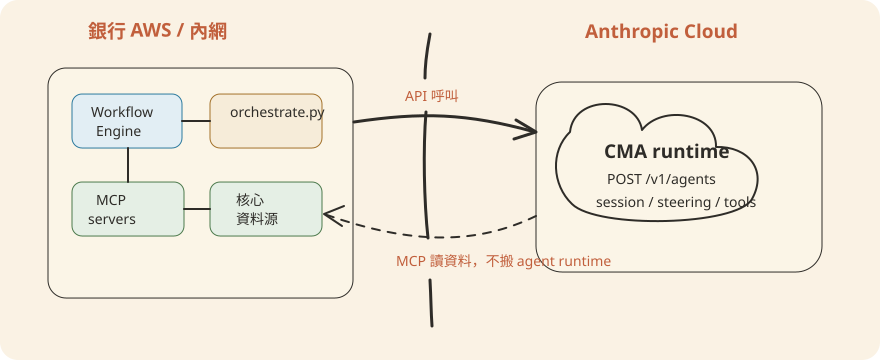

Chapter 1導論：從 10 個金融 Agent 到你的銀行系統
這本書要回答一個銀行工程師會問的實際問題：Anthropic 這套 financial-services repo
給了什麼、能不能直接用在我的銀行、以及哪裡還得自己補。本章先把「一套方案、兩種跑法」的架構講清楚，再誠實列出這 10 支 agent 對映到銀行業務的落點與缺口，最後給出全書 12 章的導讀地圖。
一、這套方案是什麼：10 個金融具名代理（Named Agent）
Anthropic 這個 repo（README.md）提供的不是一堆零散工具，而是 10
支「具名代理」——每支都命名為一個完整的工作流程 投資銀行（investment banking）、證券研究（equity
research）、私募股權（private
equity）、財富管理（wealth management）四個垂直領域的日常工作），從頭到尾自己跑完一件事：讀資料、做分析、產出草稿，然後停下來等人簽核。每支 agent
plugin
都是自包含（self-contained）的，把它用到的 skills 一起打包，裝一個 agent 就是全部需要的東西。
| 分類 | Agent（資料夾 slug） | 用途 | 風險 |
|---|---|---|---|
| 客戶經營與顧問（前台） | meeting-prep-agent（會前準備） | 開會前彙整客戶關係、持倉、市場動態，產出會前資料包 | 🟢 低 |
| pitch-agent（投行提案） | comps（可比公司分析，comparable companies analysis）、precedents（先例交易分析，precedent transactions）、LBO（槓桿收購，leveraged buyout）→ 估值（valuation，估算一家公司值多少錢）模型＋品牌提案簡報 | 🟡 中 | |
| 研究與建模（前台） | market-researcher（市場研究） | 產業/主題 → 概況、競爭格局、同業比較、標的清單 | 🟡 中 |
| earnings-reviewer（財報追蹤） | 法說會＋財報 → 更新模型 → 觀點筆記草稿 | 🟡 中 | |
| model-builder（估值建模） | 從零建 DCF（現金流折現法，discounted cash flow）、LBO、三大報表、comps，落地成 Excel | 🟡 中 | |
| 基金行政與財務（後台） | valuation-reviewer（估值複核） | 吃 GP（基金管理人，general partner）估值包、跑估值模板、備妥 LP（出資人，limited partner）報告 | 🔴 高 |
| gl-reconciler（總帳對帳） | 找出總帳（GL，general ledger，公司整體的帳務紀錄）與明細帳（subledger，各筆交易的細項紀錄）的差異、追根因、送簽核 | 🔴 高 | |
| month-end-closer（月底結帳） | 估列應計費用、餘額結轉、差異說明 | 🔴 高 | |
| statement-auditor（對帳單稽核） | 對帳單寄出前逐欄核對基金淨值（NAV，net asset value，基金資產減負債後的每單位價值） | 🔴 高 | |
| 開戶審查（中台） | kyc-screener（開戶審查） | 解析開戶文件、跑規則引擎，標出缺口交合規 | 🔴 高 |
這張表的分組（客戶經營與顧問、研究與建模、基金行政與財務、開戶審查）直接對應 README.md「Agents」表格的四個功能列；風險標記 🟢🟡🔴 則來自
docs/AgentSummary.md「一、十個助理一覽」——原則很簡單：越靠近「錢」跟「法規」，風險越高、把關越嚴。前台產出的是內部草稿，有人 review
就能攔錯；後台碰的是帳目與出資人交代，錯不得。
docs/AgentSummary.md 開頭就講明：這是把「贏得客戶 → 開戶 → 基金日常營運 → 對出資人交代」這條
pipeline 串起來的一套班底，而不是銀行全業務的覆蓋圖。二、一個來源、兩種輸出：Plugin vs CMA
README.md 第一段講的原則是這本書的技術主軸：「Everything here is available two ways from one source」——同一份
agents/<slug>.md 系統提示詞、同一批 skills，你決定它跑在哪裡。managed-agent-cookbooks/README.md
說得更直白：「Same agent, same skills — pick your surface.」
誰在盯著它跑：人。分析師在 Cowork 介面裡點開 agent、看它一步步做事，隨時可以插話、中止、要求改方向。
怎麼裝：Cowork 裡 Settings → Plugins → Add plugin，貼 repo URL 或上傳 zip；Claude Code 則是加 marketplace
後逐一 claude plugin install。
claude plugin marketplace add anthropics/financial-services
claude plugin install financial-analysis@claude-for-financial-services
claude plugin install gl-reconciler@claude-for-financial-services
claude plugin install market-researcher@claude-for-financial-services裝完後 agent 出現在 Cowork dispatch 裡，skills 在相關時機自動觸發，slash
command（/comps、/dcf、/earnings…）在 session 裡可直接叫用。
誰在盯著它跑：沒有人即時盯——無人值守（headless），由你自己的後端在特定事件發生時呼叫。
怎麼跑：managed-agent-cookbooks/<slug>/agent.yaml 是部署清單（deploy
manifest），直接引用同一份 plugin 目錄下的系統提示詞與 skills，跑 scripts/deploy-managed-agent.sh <slug> 就會把
skills 上傳、建好 leaf-worker subagents，再用真正的 POST /v1/agents 欄位把 orchestrator（主代理，負責調度 leaf worker
的那一支）建起來。
export ANTHROPIC_API_KEY=sk-ant-...
scripts/deploy-managed-agent.sh gl-reconciler關鍵事實：CMA 實際運算跑在 Anthropic
雲端（POST /v1/agents，beta header managed-agents-2026-04-01）。你的銀行 AWS
帳號裡放的是周邊系統——呼叫端後端、MCP（Model Context Protocol，模型情境協定——agent
用來連外部資料源如總帳、CRM、行情庫的標準介面）servers、編排器（scripts/orchestrate.py）、資料源，不是 agent 本身的運算。

managed-agent-cookbooks/README.md 給了 agent.yaml
的欄位對照：system: {file: ..., append: "..."} 會被解析成完整系統提示詞字串；skills: [{from_plugin: ...}]
會把整個 plugin 目錄下的 skills 上傳成
{type: custom, skill_id: ...}；callable_agents: [{manifest: ./subagents/x.yaml}] 則建出對應的
leaf worker。實際看一支範例：
name: pitch-agent
model: claude-opus-4-7
system:
file: ../../plugins/agent-plugins/pitch-agent/agents/pitch-agent.md
append: "You are running headless. Produce files in ./out/; do not assume an open Office document."
mcp_servers:
- { type: url, name: capiq, url: "${CAPIQ_MCP_URL}" }
- { type: url, name: daloopa, url: "${DALOOPA_MCP_URL}" }
skills:
- { from_plugin: ../../plugins/agent-plugins/pitch-agent }
callable_agents:
- { manifest: ./subagents/researcher.yaml }
- { manifest: ./subagents/modeler.yaml }
- { manifest: ./subagents/deck-writer.yaml } # only leaf with Write注意 mcp_servers 用 ${CAPIQ_MCP_URL} 這種環境變數佔位——CMA 版本上線時只換這裡的 URL（從 mock
換成真實供應商），不改 agent 裡的 server 名稱，因為 MCP 是以「名字」解析的。
三、為什麼銀行場景選 CMA
Plugin 模式的前提是「有個人坐在 Cowork 前面」，這對投行分析師、研究員很自然。但銀行的核心系統整合場景——授信審核排程、夜間批次對帳、事件觸發的爭議調查——沒有人會為了每一筆案件手動點開一個
agent。銀行工程師要的是能被自己的工作流引擎（Temporal、Airflow、或既有的 Guidewire 事件匯流排）當成一個可呼叫的服務接進去。這正是 CMA
的定位：managed-agent-cookbooks/README.md 說 CMA 是「your platform team deploys behind your own workflow
engine」。
三個具體理由：
1. 後端驅動，不需要人守著
事件（一筆撥款申請、一批對帳資料落地）觸發 API 呼叫，agent 跑完寫結果、發 webhook，全程不需要分析師開視窗盯著。
2. 能掛進既有工作流引擎
CMA 是一個 API 端點，不是一個桌面 App——可以被排程系統、事件匯流排、既有的核心銀行系統當一個步驟呼叫，銜接你原本就有的簽核、記錄、重試機制。
3. 權限靠架構鎖死，不是靠信任
callable_agents 目前只支援一層委派——orchestrator 能呼叫 leaf worker，leaf worker 不能再往下叫；而且每支
agent 的 leaf worker 裡只有一個有 Write
權限（managed-agent-cookbooks/README.md 表格用粗體標出，例如 gl-reconciler 是
resolver）。誰能寫、誰只能讀，寫在部署清單裡，不是靠 prompt 裡一句「請小心」。
具名代理之間也不會互相呼叫。一支 agent 需要另一支接手時，它在輸出裡吐一個 handoff_request，由
scripts/orchestrate.py（或銀行自己的事件匯流排）把它路由成新的 steering event 送到目標 session——這個參考腳本會硬性 allowlist 目標、對
payload 做 schema 驗證。用一個流程圖看實際發生順序：
後端呼叫
POST /v1/agents 觸發
orchestrator（例如「Reconcile GL vs subledger, trade date D」）orchestrator 呼叫 reader → critic → resolver，僅 resolver 有 Write
需要另一支 agent 接手時，輸出裡吐出 handoff 訊號，自己不直接呼叫別的 agent
allowlist 目標＋驗證 payload，轉成新 steering event 送給下一支 agent
四、10 個 Agent 對映銀行業務：落點與缺口
誠實地看：這 10 支 agent 是從投資銀行、證券研究、私募股權、財富管理四個垂直（README.md「Vertical Plugins」表）長出來的，服務的是投行前台、研究部、PE
基金行政、財富管理顧問——不是零售或商業銀行的核心放貸與清算業務。對映到銀行工程師實際要顧的業務，落點大致是：
| 銀行業務 | 對映的現有 agent | 吻合程度 |
|---|---|---|
| 私人銀行／財富管理客戶會議 | meeting-prep-agent | 高——場景幾乎直接可用 |
| 法人金融部研究、產業覆蓋 | market-researcher、earnings-reviewer、model-builder | 高 |
| 投資銀行部門提案作業 | pitch-agent | 高 |
| 基金／代操業務的每日對帳、月結、季末估值 | gl-reconciler、month-end-closer、valuation-reviewer、statement-auditor | 中高——邏輯相通，但銀行總帳科目表跟基金不同，需客製 |
| 私人銀行客戶開戶 KYC（認識你的客戶，know your customer）／AML（洗錢防制，anti-money laundering） | kyc-screener | 中——規則引擎框架可用，但零售銀行開戶規則、名單來源跟基金 LP 審查不同 |
而下面這些銀行工程師天天要處理的業務，這 10 支 agent 裡沒有一支直接對應：
- 授信審核（企業/個人貸款的信用評估與核貸建議）
- 信用卡爭議調查（持卡人異議、疑似盜刷的調查與裁決建議）
- 房貸審件（貸款文件審查、估價比對、核貸條件試算）
- 逾期催收（帳齡分級、催收話術與升級路徑建議）
- 分行臨櫃客戶服務（存款帳戶異動、爭議交易查詢）
這個缺口不是 repo 的疏漏，而是它從一開始就鎖定的範圍——但也正是這本書後半段要處理的：第 4 章「客製」教你怎麼把 gl-reconciler、kyc-screener 這類已有的 agent 骨架（reader → critic/rules-engine → 唯一有 Write 的 leaf）換上銀行自己的科目表、規則、名單來源；第 5 章「打造新 Agent」則教你當現有 10 支都對不上——例如要做一支信用卡爭議調查 agent——怎麼從零仿照這套「髒 reader 隔離、schema 鎖 enum、驗證方式對抗任務性質」的設計模式，長出屬於銀行自己的第 11 支 agent。
五、本書導讀地圖
全書 12 章 + 附錄，順序大致沿著「看懂架構 → 上手裝機 → 客製與新建 → 接銀行系統 → 部署維運 → 治理與測試」走：
Ch.2 架構
Plugin / CMA 的完整技術剖面：skills、MCP、subagents、system prompt 怎麼串成一支 agent。
Ch.3 快速上手
從零裝一支 agent、跑一次埋考點的樣本、看懂輸出。
Ch.4 客製
改 skills、換規則、換名單來源——不動 agent 包副本，改 vertical-plugins 源頭再同步。
Ch.5 打造新 Agent
現有 10 支對不上時，仿照設計模式從零長出屬於你銀行的 agent。
Ch.6 銀行系統整合
MCP 從 mock 換真實核心系統、總帳、名單庫的實務細節。
Ch.7 AWS 部署
周邊系統怎麼落在銀行自己的 AWS 帳號：後端、MCP servers、資料源。
Ch.8 編排
orchestrate.py、handoff_request、跨 agent 協作的路由設計。
Ch.9 安全與合規
髒 reader 隔離、prompt injection 防禦、schema 鎖 enum 的完整原理。
Ch.10 治理
簽核層級、Write 權限分權、可追查操作紀錄怎麼設計。
Ch.11 維運
上線後的監控、異常處理、版本升級。
Ch.12 測試與評估
埋考點樣本、答案卡驗收法，怎麼建立自己的迴歸測試集。
附錄
指令速查、常見錯誤、名詞對照表。
六、本章重點
POST /v1/agents，跑在 Anthropic 雲端，銀行 AWS 帳號放的是周邊系統）兩種形式部署。銀行後端整合場景通常選
CMA，因為它能掛進既有工作流引擎，且權限（一層委派、單一 leaf 有 Write）是架構鎖死而非人工承諾。10 支 agent
對映的是投行/研究/PE/財富管理/基金行政，授信、信用卡爭議、房貸審件等零售/商業銀行核心業務目前沒有對應 agent——這正是第 4、5 章要補的缺口。POST /v1/agents（beta header managed-agents-2026-04-01）在 Anthropic 雲端執行。Plugin 與 CMA
引用的是同一份 agents/<slug>.md 系統提示詞與同一批 skills，差別只在跑的地方跟誰在盯著。